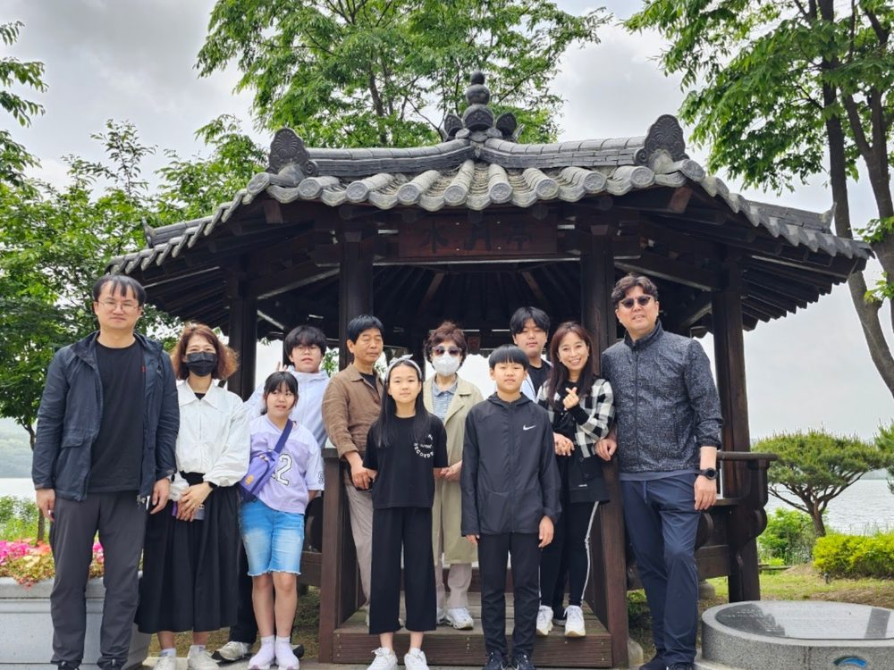
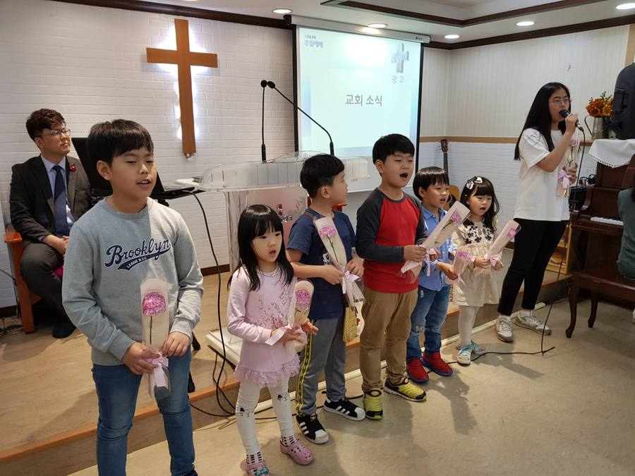

① 로고(교단·교회명) 글씨체 시안 4가지
실제 화면 맨 위 모양 그대로 만들었습니다 — 마음에 드는 번호를 말씀해 주세요.
1안
기독교대한감리회큰샘교회
2안
큰샘교회기독교대한감리회
3안
큰샘교회기독교대한감리회
KEUNSAEM CHURCH
KEUNSAEM CHURCH
4안
샘
큰샘교회기독교대한감리회
1안 = 명조 클래식(교단 위·자간 넓게) · 2안 = 미니멀(교회명 자간 크게, 교단 아래 작게) · 3안 = 금색 세로선으로 나눈 2단 · 4안 = "샘" 금색 도장 + 명조
② 메인 사진 연출 시안 3가지 (움직입니다)
지금의 "사진 전체가 차례로 바뀌는" 방식 대신, 요즘 교회 사이트들이 쓰는 세 가지 연출입니다.
A안 · 시네마틱 사진 한 장이 아주 천천히 다가오고(줌), 그 위에 명조 큰 글씨

KEUNSAEM CHURCH
물 댄 동산 같은 교회
기독교대한감리회 큰샘교회 · 주일예배 오전 11시
B안 · 미니멀 흰 여백에 글이 먼저, 사진은 아래 큰 라운드 카드로 — 가장 요즘 스타일
KEUNSAEM CHURCH
말씀 위에 세워지는 교회
기독교대한감리회 큰샘교회

C안 · 스플릿 왼쪽 글 · 오른쪽 사진 두 장을 액자처럼 겹쳐 — 따뜻하고 고급스러운 느낌
KEUNSAEM CHURCH
함께 걷는
믿음의 가족
기독교대한감리회 큰샘교회는
말씀과 기도로 세워지는 공동체입니다.

※ 어느 안이든 사진은 지금 슬라이드처럼 여러 장을 돌릴 수 있습니다. 조합도 됩니다 — 예: "로고 1안 + 메인 A안".